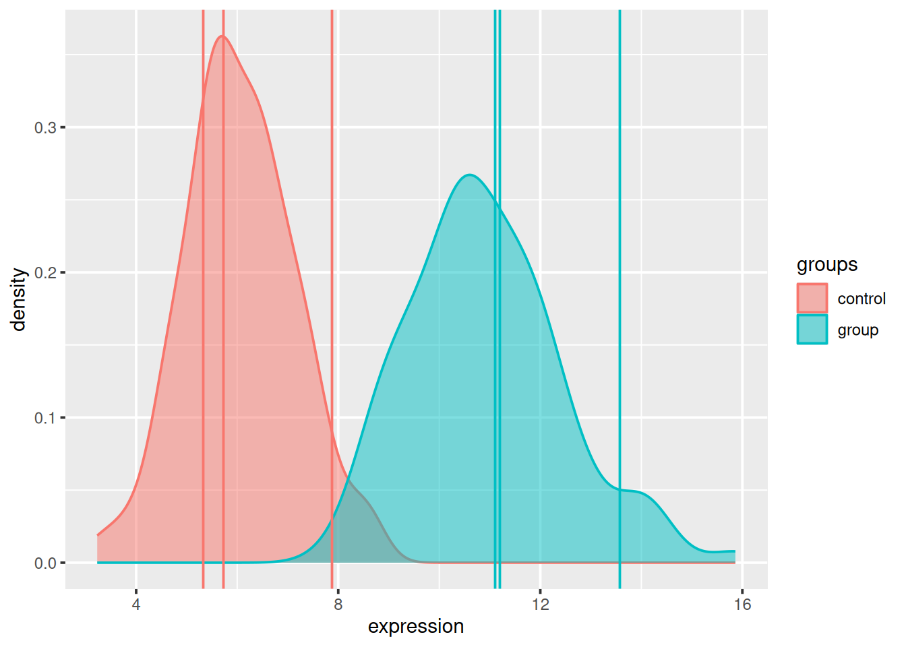

Chapter 7 Hypothesis testing
For prerequisites within the Biomedical sciences masters degree at the UCLouvain, see WFARM1247 (Traitement statistique des données).
7.1 Refresher
We have flipped a coing 100 times and have obtained the following results.
## flips
## H T
## 62 38If the coin were unbiased we expect roughly 50 heads. Can we make any claims regarding the biaised or unbiaised nature of that coin?
A coin toss can be modeled by a binomial distribution. The histogram below shows the binomial statistic for 0 to 100 heads; it represents the binomial density of for an unbiased coin. The vertical line shows the number of head observed.
Figure 7.1: Binomial density of for an unbiased coin to get 0 to 100 heads. The full area of the histogram sums to 1.

Above, we see that the most likely outcome would be 50 heads with a probability of 0.0795892. No head and 100 heads have respectively 7.888609110^{-31} and 7.888609110^{-31} probability.
We set
- \(H_0\): the coin is fair
- \(H_1\): the coin is baised
If 62 isn’t deemed too extreme, then we won’t reject \(H_0\) and conclude that the coin in faire. If 62, then we reject \(H_0\) and accept \(H_1\), and conclude that the coin is baised.
To define extreme, we set \(\alpha = 0.05\) and rejet \(H_0\) if our result is outside of the 95% most probably values.
Figure 7.2: Binomial density of for an unbiased coin to get 0 to 100 heads. The areas in red sum to 0.05.
We can also compute the p-value, the tells us how likely we are to see such a extreme or more extreme value under \(H_0\).
binom.test(x = 62, n = 100, p = 0.5)##
## Exact binomial test
##
## data: 62 and 100
## number of successes = 62, number of trials = 100, p-value =
## 0.02098
## alternative hypothesis: true probability of success is not equal to 0.5
## 95 percent confidence interval:
## 0.5174607 0.7152325
## sample estimates:
## probability of success
## 0.62Whenever we make such a decision, we will be in one of the following situations:
| \(H_0\) is true | \(H_1\) is true | |
|---|---|---|
| Reject \(H_0\) | Type I (false positive) | True positive |
| Do not reject \(H_0\) | True negative | Type II (false negative) |
See below for a step by step guide to this example.
7.2 A biological example
A typical biological example consists in measuring a gene of interest in two populations of interest (say control and group), represented by biological replicates. The figure below represents the distribution of the gene of interest in the two populations, with the expression intensities of triplicates in each population.
Figure 7.3: Expression of a gene in two populations with randomly chosen triplicates.
We don’t have access to the whole population and thus use a sample thereof (the replicated measurements) to estimate the population parameters. We have
| control | group | |
|---|---|---|
| rep.1 | 5.327429 | 11.10576 |
| rep.2 | 5.723787 | 11.19393 |
| rep.3 | 7.870450 | 13.57260 |
| mean | 6.307222 | 11.95743 |
| sd | 1.368224 | 1.39947 |
We set our hypothesis as
- \(H_0\): the means of the two groups are the same.
- \(H_1\): the means of the two groups are different.
and calculate a two-sided, two-sample t-test (assuming unequal variances) with
\[ t = \frac{ \bar X_{1} - \bar X_{2} } { \sqrt{ \frac{ s_{1}^{2} }{ N_{1} } \frac{ s_{2}^{2} }{ N_{2} } } } \]
where \(\bar X_i\), \(s_{i}^{2}\) and \(N_i\) are the mean, variance and size of samples 1 and 2. In R, we do this with
t.test(s1, s2)##
## Welch Two Sample t-test
##
## data: s1 and s2
## t = -5.0003, df = 3.998, p-value = 0.007499
## alternative hypothesis: true difference in means is not equal to 0
## 95 percent confidence interval:
## -8.788162 -2.512255
## sample estimates:
## mean of x mean of y
## 6.307222 11.957431Note that in practice, we would apply moderated versions of the t-test, such as the one provided in the limma package and also widely applied to RNA-Seq count data.
7.3 A more realistic biological example
Let’s now use the tdata1 dataset from the rWSBIM1322 package that provide gene expression data for 100 genes and 6 samples, three in group A and 3 in group B.
library("rWSBIM1322")
data(tdata1)
head(tdata1)## A1 A2 A3 B1 B2 B3
## feature1 429.6721 433.3133 1806.2773 3534.6396 4541.2757 1139.8326
## feature2 1320.8827 1085.5660 10643.9541 239.7528 14177.4412 678.5271
## feature3 321.5151 289.6480 9236.7965 15745.7491 443.8737 198.5716
## feature4 9348.7749 1274.8021 647.2523 601.6313 595.6266 1040.1568
## feature5 1616.9009 413.2385 43.0974 10143.6595 575.0549 4048.5851
## feature6 328.3438 11866.2342 32661.9472 8331.8745 608.3194 9331.7692► Question
Visualise the distribution of the tdata1 data and, if necessary, log-transform it.
► Solution

We are now going to apply a t-test to feature 73, comparing the expression intensities in groups A and B. In R, this can be done with the t.test function:
x <- log_tdata1[73, ]
t.test(x[1:3], x[4:6])##
## Welch Two Sample t-test
##
## data: x[1:3] and x[4:6]
## t = 0.1728, df = 3.999, p-value = 0.8712
## alternative hypothesis: true difference in means is not equal to 0
## 95 percent confidence interval:
## -3.444807 3.902010
## sample estimates:
## mean of x mean of y
## 10.14391 9.91531► Question
- Interpret the results of the test above.
- Repeat it with another features.
► Question
We would now like to repeat the same analysis on the 100 genes.
Write a function that will take a vector as input and perform a t-test of the first values (our group A) against the 3 last values (our group B) and returns the p-values.
Apply the test to all the genes.
How many significantly differentically expressed genes do you find? What features are of possible biological interest?
► Solution
► Question
The data above have been generated with the rnorm function for all samples. - Do you still think any of the features show significant differences? - Why are there still some features (around 5%) that show a significant p-value at an alpha of 0.05?
To answer these questions, let’s visualise the calculated p-values with a histogramme.
hist(pvals)7.4 Adjustment for multiple testing
Given the multitue of test, the type I error is not controlled anymore. We need to take this into account and adjust the p-values for multiple testing. Below we apply the Benjamini-Hochberg procedure using the p.adjust function and confirm that none of the features are differentially expressed.
adj_pvals <- p.adjust(pvals, method = "BH")
any(adj_pvals < 0.05)## [1] FALSEmin(adj_pvals)## [1] 0.8997367.5 Linear regression
7.6 Empirical approximations
- Bootstrapping to generate null distributions
7.7 A word of caution
- p-hacking and p-harking
7.8 Additional exercises
► Question
Generate random data using rnorm for 100 genes and 6 samples and test for differential expression, comparing for each gene the 3 first samples against the 3 last samples. Verify that you identify about 5 p-values smaller that 0.05. Visualise and interprete the histogramme of these p-values.
The coin example, step by step
This step by step example is taken from Oliver Crook’s intro lecture on statistics from the 2019 Bioinformatics Summer School at the UCLouvain.
The following code chunk simulates 100 coin toss from a biased coin.
set.seed(2)
n <- 100
p <- 0.59
flips <- sample(c("H", "T"), size = n,
replace = TRUE,
prob = c(p, 1 - p))If the coin were unbiased we expect roughly 50 heads. Let us see how many heads and tails there are.
table(flips)## flips
## H T
## 62 38We calculate the binomial statistic for a number of flips between 0 and 100. This is the binomial density for an unbiased coin.
library("dplyr")
num_heads <- sum(flips == "H")
binomial_dens <-
tibble(k = 0:n) %>%
mutate(p = dbinom(k, size = n, prob = 0.5))► Question
Write some code to check that the probabilties from the binomial statistic sum to \(1\).
Change the
probargument and show that the probabilities still sum to \(1\).
The following code chunk plots the binomial statistic and the number of heads observed is marked in blue.
library("ggplot2")
ggplot(binomial_dens, aes(x = k, y = p)) +
geom_bar(stat = "identity") +
geom_vline(xintercept = num_heads)
► Question
- Change the prob argument above and re-plot the binomial statistic, what do you notice about how the distribution is centered?
Now, we set the size of the reject threshold, this is a choice and corresponds to how many false discoveries we are happy to allow.
alpha <- 0.05► Question
Without looking below use the arrange function from
dplyrto order the probabilities, smallest first.Looking at the output, what is the most unlikely number of heads to observe?
Looking at the output, what is the most likely number of heads to observe?
► Solution
► Question
- What does the following code chunk do?
binomial_dens <-
arrange(binomial_dens, p) %>%
mutate(reject = (cumsum(p) <= alpha))
Let us plot the reject region in red
ggplot(binomial_dens) +
geom_bar(aes(x = k, y = p, fill = reject), stat = "identity") +
scale_fill_manual(
values = c(`TRUE` = "red", `FALSE` = "#5a5a5a")) +
geom_vline(xintercept = num_heads, col = "blue") +
theme(legend.position = "none")► Question
- Is there evidence that our coin is biased?
- Change the size of the reject region to a smaller value, what is our conclusion now?
The above test already has an easy to use funciton in R:
binom.test(x = num_heads, n = n, p = 0.5)##
## Exact binomial test
##
## data: num_heads and n
## number of successes = 62, number of trials = 100, p-value =
## 0.02098
## alternative hypothesis: true probability of success is not equal to 0.5
## 95 percent confidence interval:
## 0.5174607 0.7152325
## sample estimates:
## probability of success
## 0.62Page built: 2019-10-27